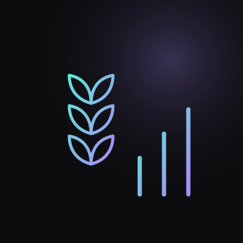

Machine learning
Forged Emblem Detection
A transfer-learning image model that identifies counterfeit emblems with 97.5% accuracy, served through a Streamlit app.
Projects
Full-stack apps, machine learning, and data science, 11 projects in all. Source code is on GitHub.
Machine learning
A transfer-learning image model that identifies counterfeit emblems with 97.5% accuracy, served through a Streamlit app.
Full-stack
A full e-commerce system with secure authentication, dynamic product listings, and Stripe checkout, using MySQL and Neo4j for data.
ML & time series
Predicts cost-of-living trends with ARIMA, LSTM, and regression models, with feature-importance analysis and an interactive Streamlit app backed by PostgreSQL.
Data science
ARIMA(1,0,1) for temporal trends plus Decision Tree and Random Forest crime classification, with maps of geographic hotspots.
View on GitHub → PUBLIC HEALTHPredicts the drug most likely responsible across U.S. demographic groups, comparing Logistic Regression, Naive Bayes, Random Forest, SVM, and GBM.
View on GitHub → STATISTICSPredictive models for public-health planning using Lasso, Ridge, LDA, logistic regression, and kernel SVMs.
View on GitHub →
MARKETSHistorical trends, regional differences, and price drivers in feed grain production, using clustering and predictive models.
View on GitHub → VISUALIZATIONPatron behavior, circulation trends, and usage forecasts from San Francisco Public Library data.
View on GitHub →More
Low-latency, secure messaging for 100+ concurrent users, built at DRDO.
View on GitHub → COMPUTER VISIONAttendance tracking with CNN, SVM, and HOG features to reduce false identifications.
View on GitHub → FULL-STACKDjango web app for products, suppliers, stock movements, and validated sales orders, with full CRUD.
View on GitHub →